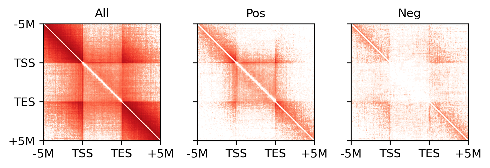

RNA correlated loop#
import numpy as np
import pandas as pd
import cooler
import anndata
import scanpy as sc
import matplotlib as mpl
import matplotlib.pyplot as plt
from matplotlib.colors import LogNorm
from matplotlib import cm as cm
import seaborn as sns
mpl.style.use('default')
mpl.rcParams['pdf.fonttype'] = 42
mpl.rcParams['ps.fonttype'] = 42
mpl.rcParams['font.family'] = 'sans-serif'
mpl.rcParams['font.sans-serif'] = 'Helvetica'
indir = '/home/jzhou_salk_edu/sky_workdir/hba/loop_majortype/diff/neu/'
outdir = '/home/jzhou_salk_edu/sky_workdir/hba/rna_majortype/'
# no L5ET
leg = ['L23_IT', 'L4_IT', 'L5_IT', 'L6_IT', 'L6_IT_Car3', 'L56_NP', 'L6_CT', 'L6b', 'Amy',
'Lamp5', 'Lamp5_LHX6', 'Sncg', 'Vip', 'Pvalb', 'Pvalb_ChC', 'Sst', 'CHD7',
'MSN_D1', 'MSN_D2', 'Foxp2', 'SubCtx',
# 'ASC', 'ODC', 'OPC', 'MGC', 'PC', 'EC', 'VLMC'
]
loopq = pd.read_hdf(f'{indir}loop_Q.hdf')
loopall = pd.read_hdf(f'{indir}merged_loop.hdf')
expr = pd.read_hdf(f'{outdir}cluster_expr.hdf').loc[leg]
from scipy.stats import rankdata
deg = np.zeros(expr.shape[1])
for i in range(len(leg)-1):
for j in range(i+1, len(leg)):
tmp = np.load(f'{outdir}DEG/{leg[i]}-{leg[j]}.npz')
# deg[np.logical_and(np.abs(tmp['fc'])>1, tmp['fdr']<1e-3)] = 1
rank = rankdata(tmp['fdr'])
deg[rank<=100] = 1
print(deg.sum())
1131.0
chrom_size_path = f'/data/hba/loop_majortype/hg38_with_chrl.main.chrom.sizes'
chrom_sizes = cooler.read_chromsizes(chrom_size_path, all_names=True)
gene_meta = pd.read_csv('/home/jzhou_salk_edu/sky_workdir/hba/ref/gencode.v33.bed', sep='\t', index_col=None, header=None)
gene_meta.columns = ['chrom', 'start', 'end', 'gene_id', 'gene_name', 'strand']
gene_meta = gene_meta.set_index('gene_id').loc[expr.columns[deg==1]]
gene_meta = gene_meta.loc[gene_meta['chrom'].isin(chrom_sizes.index[:22])]
gene_meta
| chrom | start | end | gene_name | strand | |
|---|---|---|---|---|---|
| gene | |||||
| ENSG00000002746.15 | chr7 | 43112629 | 43566001 | HECW1 | + |
| ENSG00000005108.16 | chr7 | 11370365 | 11832198 | THSD7A | - |
| ENSG00000006128.12 | chr7 | 97732084 | 97740472 | TAC1 | + |
| ENSG00000006468.14 | chr7 | 13891229 | 13991425 | ETV1 | - |
| ENSG00000007237.18 | chr17 | 9910609 | 10198551 | AC005747.1 | - |
| ... | ... | ... | ... | ... | ... |
| ENSG00000286954.1 | chr6 | 22663507 | 22675493 | AL033539.2 | + |
| ENSG00000287172.1 | chr2 | 76185020 | 76399490 | AC073091.3 | + |
| ENSG00000287694.1 | chr16 | 76277288 | 76819624 | AC106741.2 | + |
| ENSG00000287722.1 | chr13 | 53207831 | 53801489 | AL356295.1 | + |
| ENSG00000287912.1 | chr11 | 81175201 | 81431520 | AP003464.1 | + |
1099 rows × 5 columns
import cooler
# from qnorm import quantile_normalize
from scipy.stats import norm
from tqdm import tqdm
from ALLCools.mcds.correlation import corr_array
def shuffle_corr_norm(rna_data, dmr_data):
shuffle_rna_data = rna_data.copy()
for col, data in shuffle_rna_data.items():
n_gene = shuffle_rna_data.shape[0]
shuffle_rna_data[col] = shuffle_rna_data[col].sample(n_gene).values
if dmr_data.shape[0] > 50000:
shuffle_dmr_data = dmr_data.sample(50000).copy()
else:
shuffle_dmr_data = dmr_data.copy()
for col, data in shuffle_dmr_data.items():
n_dmr = shuffle_dmr_data.shape[0]
shuffle_dmr_data[col] = shuffle_dmr_data[col].sample(n_dmr).values
# shuffle corr
shuffle_corr = corr_array(shuffle_rna_data, shuffle_dmr_data)
mu, std = norm.fit(shuffle_corr.ravel())
return mu, std, shuffle_corr.ravel()
null_mu, null_std, shuffle_corr = shuffle_corr_norm(expr.loc[:, gene_meta.index].T, loopq)
null_mu, null_std
(0.0026065808764122516, 0.2236524692590272)
shuffle_corr.shape
(54950000,)
gene_slop = 5000000
gene_records = []
for gene, row in tqdm(gene_meta.iterrows(), total=gene_meta.shape[0]):
gene_rna = expr[[gene]].T
dmr_chrom = row['chrom']
dmr_start = row['start'] - gene_slop
dmr_end = row['end'] + gene_slop
sel_dmr = (loopall[0]==dmr_chrom) & (loopall[1] > dmr_start) & (loopall[5] < dmr_end)
gene_dmr = loopq.loc[sel_dmr]
gene_corr = corr_array(gene_rna, gene_dmr).ravel()
gene_corr = pd.Series(gene_corr, index=gene_dmr.index)
# pvalue = norm.sf(gene_corr.values, null_mu, null_std)
# pvalue[pvalue > 0.5] = 1 - pvalue[pvalue > 0.5]
# pvalue *= 2 # two tailed
# perform multi-test correction and q-value
# _, q, *_ = fdrcorrection(pvalue)
gene_corr.name = 'corr'
gene_corr = gene_corr.reset_index()
gene_corr['gene'] = gene
# gene_corr["q"] = q
# minimum filter
# gene_corr = gene_corr[
# (gene_corr["q"] < min_q) & (gene_corr["corr"].abs() > min_corr)
# ].set_index("dmr")
# gene_records[gene] = gene_corr
gene_records.append(gene_corr)
100%|██████████| 1099/1099 [02:42<00:00, 6.77it/s]
gene_records = pd.concat(gene_records, axis=0)
gene_records.index = np.arange(gene_records.shape[0])
gene_records
| index | corr | gene | |
|---|---|---|---|
| 0 | 1363388 | 0.551680 | ENSG00000002746.15 |
| 1 | 1363389 | 0.613300 | ENSG00000002746.15 |
| 2 | 1363390 | 0.616141 | ENSG00000002746.15 |
| 3 | 1363391 | 0.591706 | ENSG00000002746.15 |
| 4 | 1363392 | 0.579583 | ENSG00000002746.15 |
| ... | ... | ... | ... |
| 11707151 | 1999960 | 0.015354 | ENSG00000287912.1 |
| 11707152 | 1999961 | 0.013737 | ENSG00000287912.1 |
| 11707153 | 1999991 | 0.096387 | ENSG00000287912.1 |
| 11707154 | 1999992 | 0.076112 | ENSG00000287912.1 |
| 11707155 | 2000026 | 0.026490 | ENSG00000287912.1 |
11707156 rows × 3 columns
fig, ax = plt.subplots()
sns.distplot(np.random.choice(gene_records['corr'], 50000), ax=ax)
sns.distplot(np.random.choice(shuffle_corr, 50000), ax=ax)
<AxesSubplot:ylabel='Density'>
findfont: Font family ['sans-serif'] not found. Falling back to DejaVu Sans.
findfont: Generic family 'sans-serif' not found because none of the following families were found: Helvetica

t1 = rankdata(np.concatenate((gene_records['corr'].values, shuffle_corr)))[:gene_records.shape[0]]
t2 = rankdata(gene_records['corr'].values)
gene_records['FDRneg'] = (t1 - t2) / len(shuffle_corr) / t2 * gene_records.shape[0]
gene_records['FDRpos'] = (len(shuffle_corr) - t1 + t2) / len(shuffle_corr) / (gene_records.shape[0] - t2) * gene_records.shape[0]
gene_meta[['TSS', 'TES']] = gene_meta[['start', 'end']]
selg = (gene_meta['strand']=='-')
gene_meta.loc[selg, ['TSS', 'TES']] = gene_meta.loc[selg, ['TES', 'TSS']].values
loopall['start'] = loopall[[1, 2]].mean(axis=1)
loopall['end'] = loopall[[4, 5]].mean(axis=1)
gene_records['TSSdist1'] = loopall.loc[gene_records['index'], 'start'].values - gene_meta.loc[gene_records['gene'], 'TSS'].values
selg = (gene_meta.loc[gene_records['gene'], 'strand']=='-')
gene_records.loc[selg.values, 'TSSdist1'] = -gene_records.loc[selg.values, 'TSSdist1'].values
gene_records['TESdist1'] = loopall.loc[gene_records['index'], 'start'].values - gene_meta.loc[gene_records['gene'], 'TES'].values
selg = (gene_meta.loc[gene_records['gene'], 'strand']=='-')
gene_records.loc[selg.values, 'TESdist1'] = -gene_records.loc[selg.values, 'TESdist1'].values
gene_records['TSSdist2'] = loopall.loc[gene_records['index'], 'end'].values - gene_meta.loc[gene_records['gene'], 'TSS'].values
selg = (gene_meta.loc[gene_records['gene'], 'strand']=='-')
gene_records.loc[selg.values, 'TSSdist2'] = -gene_records.loc[selg.values, 'TSSdist2'].values
gene_records['TESdist2'] = loopall.loc[gene_records['index'], 'end'].values - gene_meta.loc[gene_records['gene'], 'TES'].values
selg = (gene_meta.loc[gene_records['gene'], 'strand']=='-')
gene_records.loc[selg.values, 'TESdist2'] = -gene_records.loc[selg.values, 'TESdist2'].values
gene_records.to_hdf(f'{outdir}DEG_neu_loop_5M_corr.hdf', key='data')
gene_records = pd.read_hdf(f'{outdir}DEG_neu_loop_5M_corr.hdf')
gene_records = gene_records[~gene_records['gene'].isin(gene_meta.index[gene_meta['chrom'].isin(['chrX', 'chrY'])])]
dist = 2000000
gene_records['coord1'] = 0
selp = (gene_records['TSSdist1']<=0)
gene_records.loc[selp, 'coord1'] = gene_records.loc[selp, 'TSSdist1'] / (dist/200) - 100
selp = (gene_records['TESdist1']>=0)
gene_records.loc[selp, 'coord1'] = gene_records.loc[selp, 'TESdist1'] / (dist/200) + 100
selp = (gene_records['TESdist1']<0) & (gene_records['TSSdist1']>0)
gene_records.loc[selp, 'coord1'] = gene_records.loc[selp, 'TSSdist1'] / (gene_records.loc[selp, 'TSSdist1'] - gene_records.loc[selp, 'TESdist1']) * 200 - 100
gene_records['coord2'] = 0
selp = (gene_records['TSSdist2']<=0)
gene_records.loc[selp, 'coord2'] = gene_records.loc[selp, 'TSSdist2'] / (dist/200) - 100
selp = (gene_records['TESdist2']>=0)
gene_records.loc[selp, 'coord2'] = gene_records.loc[selp, 'TESdist2'] / (dist/200) + 100
selp = (gene_records['TESdist2']<0) & (gene_records['TSSdist2']>0)
gene_records.loc[selp, 'coord2'] = gene_records.loc[selp, 'TSSdist2'] / (gene_records.loc[selp, 'TSSdist2'] - gene_records.loc[selp, 'TESdist2']) * 200 - 100
gene_records = gene_records.loc[(gene_records[['coord1','coord2']].min(axis=1)>-300) & (gene_records[['coord1','coord2']].max(axis=1)<300)]
gene_records['group1'], group1 = pd.cut(gene_records['coord1'], 300, labels=False, retbins=True)
gene_records['group2'], group2 = pd.cut(gene_records['coord2'], 300, labels=False, retbins=True)
threspos = gene_records.loc[gene_records['FDRpos']<0.1, 'corr'].min()
thresneg = gene_records.loc[gene_records['FDRneg']<0.1, 'corr'].max()
print(threspos, thresneg)
0.6027898776172802 -0.5201701393194751
thres = np.max(np.abs([thresneg, threspos]))
res = 10000
## promoter
tmp = gene_records.loc[(gene_records['corr']>thres) & (((gene_records['TSSdist1']>-res) & (gene_records['TSSdist1']<res)) | ((gene_records['TSSdist2']>-res) & (gene_records['TSSdist2']<res))), 'gene'].unique()
print(tmp.shape[0], tmp.shape[0]/gene_records['gene'].unique().shape[0])
np.savetxt(f'{outdir}gene_loopposcorr_tss.csv.gz', tmp, delimiter='\n', fmt='%s')
tmp = gene_records.loc[(gene_records['corr']>thres) & (((gene_records['TESdist1']>-res) & (gene_records['TESdist1']<res)) | ((gene_records['TESdist2']>-res) & (gene_records['TESdist2']<res))), 'gene'].unique()
print(tmp.shape[0], tmp.shape[0]/gene_records['gene'].unique().shape[0])
np.savetxt(f'{outdir}gene_loopposcorr_tes.csv.gz', tmp, delimiter='\n', fmt='%s')
962 0.8761384335154827
877 0.7987249544626593
tmp = gene_records.loc[(gene_records['corr']>thres) & (((gene_records['TSSdist1']>-res) & (gene_records['TESdist1']<res)) & ((gene_records['TSSdist2']>-res) & (gene_records['TESdist2']<res))), 'gene'].unique()
print(tmp.shape[0], tmp.shape[0]/gene_records['gene'].unique().shape[0])
np.savetxt(f'{outdir}gene_loopposcorr_genebodyboth.csv.gz', tmp, delimiter='\n', fmt='%s')
tmp = gene_records.loc[(gene_records['corr']<-thres) & (((gene_records['TSSdist1']>-res) & (gene_records['TESdist1']<res)) & ((gene_records['TSSdist2']>-res) & (gene_records['TESdist2']<res))), 'gene'].unique()
print(tmp.shape[0], tmp.shape[0]/gene_records['gene'].unique().shape[0])
tmp = gene_records.loc[(gene_records['corr']>thres) & (((gene_records['TSSdist1']>-res) & (gene_records['TESdist1']<res)) | ((gene_records['TSSdist2']>-res) & (gene_records['TESdist2']<res))), 'gene'].unique()
print(tmp.shape[0], tmp.shape[0]/gene_records['gene'].unique().shape[0])
np.savetxt(f'{outdir}gene_loopposcorr_genebodyone.csv.gz', tmp, delimiter='\n', fmt='%s')
898 0.8178506375227687
44 0.04007285974499089
1070 0.9744990892531876
tmp = gene_records.loc[(gene_records['corr']>threspos) | (gene_records['corr']<thresneg)].groupby(['group1','group2'])['corr'].mean()
groupsigcorr = np.zeros((300, 300)) / 0
groupsigcorr[(tmp.index.get_level_values('group1'), tmp.index.get_level_values('group2'))] = tmp.values
tmp = gene_records.groupby(['group1','group2'])['corr'].mean()
groupcorr = np.zeros((300, 300)) / 0
groupcorr[(tmp.index.get_level_values('group1'), tmp.index.get_level_values('group2'))] = tmp.values
tmp = gene_records.loc[gene_records['corr']>threspos].groupby(['group1','group2'])['corr'].count()
groupposcount = np.zeros((300, 300))
groupposcount[(tmp.index.get_level_values('group1'), tmp.index.get_level_values('group2'))] = tmp.values
tmp = gene_records.loc[gene_records['corr']<thresneg].groupby(['group1','group2'])['corr'].count()
groupnegcount = np.zeros((300, 300))
groupnegcount[(tmp.index.get_level_values('group1'), tmp.index.get_level_values('group2'))] = tmp.values
tmp = gene_records.loc[(gene_records['corr']>threspos) | (gene_records['corr']<thresneg)].groupby(['group1','group2'])['corr'].count()
groupsigcount = np.zeros((300, 300))
groupsigcount[(tmp.index.get_level_values('group1'), tmp.index.get_level_values('group2'))] = tmp.values
tmp = gene_records.groupby(['group1','group2'])['corr'].count()
groupcount = np.zeros((300, 300))
groupcount[(tmp.index.get_level_values('group1'), tmp.index.get_level_values('group2'))] = tmp.values
cmap = mpl.cm.bwr
cmap.set_bad('black', 1.0)
fig, axes = plt.subplots(1, 3, figsize=(6,2), sharex='all', sharey='all', dpi=300)
# ax = axes[0]
# plot = ax.imshow(groupcorr, vmin=-1, vmax=1, cmap=cmap)
# fig.colorbar(plot, ax=ax, shrink=0.5, fraction=0.1)
for i,xx in enumerate([groupcount, groupposcount, groupnegcount]):
ax = axes[i]
plot = ax.imshow(xx, cmap='Reds', norm=LogNorm(vmin=1, vmax=1e3))
ax.set_title(['All', 'Pos', 'Neg'][i], fontsize=10)
ax.set_xticks(np.arange(-0.5, 300.5, 100))
ax.set_yticks(np.arange(-0.5, 300.5, 100))
ax.set_xticklabels(['-5M', 'TSS', 'TES', '+5M'])
ax.set_yticklabels(['-5M', 'TSS', 'TES', '+5M'])
# ax.set_xlabel('Zscore log Q anova')
plt.tight_layout()

cmap = mpl.cm.bwr
cmap.set_bad('black', 1.0)
fig, axes = plt.subplots(1, 3, figsize=(6,2), sharex='all', sharey='all', dpi=300)
# ax = axes[0]
# plot = ax.imshow(groupcorr, vmin=-1, vmax=1, cmap=cmap)
# fig.colorbar(plot, ax=ax, shrink=0.5, fraction=0.1)
for i,xx in enumerate([groupcount, groupposcount, groupnegcount]):
ax = axes[i]
plot = ax.imshow(xx, cmap='Reds', norm=LogNorm(vmin=1, vmax=1e3))
ax.set_title(['All', 'Pos', 'Neg'][i], fontsize=10)
ax.set_xticks(np.arange(-0.5, 300.5, 100))
ax.set_yticks(np.arange(-0.5, 300.5, 100))
ax.set_xticklabels(['-2M', 'TSS', 'TES', '+2M'])
ax.set_yticklabels(['-2M', 'TSS', 'TES', '+2M'])
# ax.set_xlabel('Zscore log Q anova')
plt.tight_layout()
# plt.savefig('DEG_loop_sigcorr_count.pdf', transparent=True)

cmap = mpl.cm.bwr
cmap.set_bad('black', 1.0)
fig, axes = plt.subplots(1, 3, figsize=(7.5,2.5), sharex='all', sharey='all', dpi=300)
ax = axes[0]
plot = ax.imshow(groupcorr, vmin=-1, vmax=1, cmap=cmap)
fig.colorbar(plot, ax=ax, shrink=0.5, fraction=0.1)
ax = axes[1]
# plot = ax.imshow(groupcount, cmap='Reds', norm=LogNorm(vmin=1, vmax=1e3))
plot = ax.imshow(groupsigcount / groupcount, cmap='Reds', vmin=0, vmax=0.6)
fig.colorbar(plot, ax=ax, ticks=[0, 0.6], shrink=0.5, fraction=0.1)
ax = axes[2]
plot = ax.imshow((groupposcount+1) / (groupnegcount+1), cmap='bwr', norm=LogNorm(vmin=1e-2, vmax=1e2))
fig.colorbar(plot, ax=ax, shrink=0.5, fraction=0.1)
ax.set_xticks(np.arange(-0.5, 300.5, 100))
ax.set_yticks(np.arange(-0.5, 300.5, 100))
ax.set_xticklabels(['-2M', 'TSS', 'TES', '+2M'])
ax.set_yticklabels(['-2M', 'TSS', 'TES', '+2M'])
for ax,xx in zip(axes, ['Corr', '%SigLoop', 'Pos/Neg']):
ax.set_title(xx, fontsize=10)
# ax.set_xlabel('Zscore log Q anova')
plt.tight_layout()
# plt.savefig('DEG_loop_sigcorr_mean.pdf', transparent=True)

cmap = mpl.cm.bwr
cmap.set_bad('black', 1.0)
fig, axes = plt.subplots(1, 3, figsize=(7.5,2.5), sharex='all', sharey='all', dpi=300)
ax = axes[0]
plot = ax.imshow(groupcorr, vmin=-1, vmax=1, cmap=cmap)
fig.colorbar(plot, ax=ax, shrink=0.5, fraction=0.1)
ax = axes[1]
plot = ax.imshow(groupcount, cmap='Reds', norm=LogNorm(vmin=1, vmax=1e3))
fig.colorbar(plot, ax=ax, shrink=0.5, fraction=0.1)
ax = axes[2]
plot = ax.imshow((groupposcount+1) / (groupnegcount+1), cmap='bwr', norm=LogNorm(vmin=1e-2, vmax=1e2))
fig.colorbar(plot, ax=ax, shrink=0.5, fraction=0.1)
ax.set_xticks(np.arange(-0.5, 300.5, 100))
ax.set_yticks(np.arange(-0.5, 300.5, 100))
ax.set_xticklabels(['-2M', 'TSS', 'TES', '+2M'])
ax.set_yticklabels(['-2M', 'TSS', 'TES', '+2M'])
for ax,xx in zip(axes, ['Corr', '#Loop', 'Pos/Neg']):
ax.set_title(xx, fontsize=10)
# ax.set_xlabel('Zscore log Q anova')
plt.tight_layout()
# plt.savefig('DEG_loop_sigcorr_mean.pdf', transparent=True)

for i in range(3):
for j in range(i,3):
print(groupposcount[(i*100):(i*100+100), (j*100):(j*100+100)].sum() /
(groupposcount[(i*100):(i*100+100), (j*100):(j*100+100)].sum() +
groupnegcount[(i*100):(i*100+100), (j*100):(j*100+100)].sum()))
0.7383856476742864
0.7817007006734098
0.4595160929816719
0.9778063774148058
0.6653371514283767
0.7132464224170225
for i in range(3):
for j in range(i,3):
print(groupsigcount[(i*100):(i*100+100), (j*100):(j*100+100)].sum() / groupcount[(i*100):(i*100+100), (j*100):(j*100+100)].sum())
0.08403407522975455
0.2336316443198828
0.12759025106675745
0.4697464723512085
0.1907666694847466
0.07912202825558069